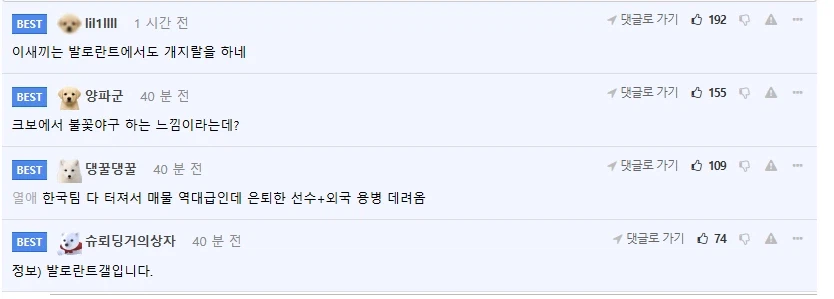

발로에서도 열심히 불타는중 ㅋㅋㅋㅋ

발로에서도 열심히 불타는중 ㅋㅋㅋㅋ

조마쉬사단 t1 외부행사존나돌리고 적자면했다고 언플하고 제우스연봉후려친다음 zofgk 티셔츠 사업하고 ㅋㅋ
외부행사 돌리는거야 그럴 수 있다쳐도 자기랑 밀접한 광고에이전시 같은거 거치게해서 커미션 왕창 떼먹은게 문제아님?
쟨 평가가 저모양인데 어떻게 아직도 프런트질 해먹고있는거임?
컴캐에서 밀어주는 중 그리고 선수 갈아서 돈은 잘범 ㅇㅇ
프런트라든지 기자라든지 이런 사람들 결국 인맥아님? 로마노 같은 해축 1티어 기자도 결국 압도적으로 빠르고 신빙성있는 정보로 1황 먹는거고 그건 결국 인맥싸움일텐데
실적은 좋으니깐 프로게임신 조금만 봐도 알겠지만 경기성적이랑 실적이 크게 상관없음
안좋은 방향으로 한결같구나
저새끼 욕하면 고소당함?
롤티원 코치도 북미향우회니 뭐니하면서 저따구로 데려오려다 불탔었지ㅋㅋ
얘가 조마쉬임?